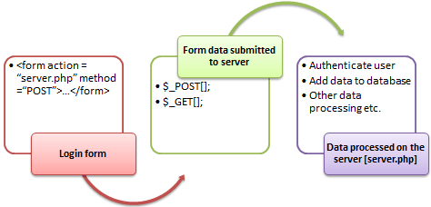

Zoeken
Om te kunnen zoeken moet je eerst een zoekformulier maken, deze verstuur je naar een resultaat pagina, waar je vervolgens het resultaat weer geeft.

1- Zoek formulier
In de header.php of navigation.php heb je waarschijnlijk al een klein formulier zitten.
Deze kunnen wij gaan gebruiken voor het zoeken, hiervoor moet je het formulier een action en een method geven.
De action is de pagina waar wij straks naartoe verwijzen, in dit geval search.php
De method is de manier waarop wij informatie gaan versturen, in ins geval gebruiken wij de GET methode.
Je formulier zal er waarschijnlijk ongeveer zo uitzien:
<form class="d-flex" role="search" action="/search.php" method="get">
<input class="form-control me-2" type="search" placeholder="Search" aria-label="Search" name="searchquery">
<button class="btn btn-outline-success" type="submit">Search</button>
</form>
2- Resultaat pagina
Maak nu een php pagina ana waar je het resultaat gaat weergeven.
Plaats ook dit bestand in de public folder en noem het search.php
De inhoud van dit bestand kan hetzelfde zijn als single.php uit de views folder.
3- Zoek query
Geef nu eerst in de body van deze nieuwe pagina de zoek query weer.
Hiervoor gebruik je de GET methode, waarbij de key zoekterm overeen moet komen met naam van het input field :
$zoekterm = $_GET['zoekterm'];
echo 'Je zocht op: ' . $zoekterm;
4- Resultaat zichtbaar op de pagina
Op dit moment weet je waar iemand naar zoekt.
Nu is het tijd om de query aan te passen zodat je kunt zoeken naar een onderdeel van de titel van een single.
Bij de query geef je nu aan dat de WHERE singles.title = ? niet een gelijk aan operator nodig heeft, maar een wildcard.
Binnen MySQL kun je dit doen door gebruik te maken van een LIKE operator.
Je query zal er dan zo uit zien:
SELECT singles.*, artists.title as artist_title, genres.title as genre_title
FROM singles
LEFT JOIN artists ON singles.artist_id = artists.id
LEFT JOIN genres ON singles.genre_id = genres.id
WHERE singles.title LIKE ?
Vervolgens moet je de zoekterm aanpassen waarbij je aangeeft welk onderdeel er variabel is.
Dat doe je door een % te plaatsen bij de parameter waar je variabele zit.
Ik maak daarvoor een tussen variabele als volgt:
$parameter = '%' . $zoekterm . '%';
Alles bij elkaar zal mijn pagina er zo uit zien:
<?php
define('PAGE_TITLE', 'De zoek pagina');
define('PAGE_ACTIVE', 'search');
// verbind met de database
require_once('../source/database.php');
// haal de zoekterm op wanneer deze ingesteld is,
// als dat niet het geval is wil ik dat de search query leeg is
$zoekterm = '';
if ( isset( $_GET['searchquery']) ) {
$zoekterm = $_GET['searchquery'];
}
include('../views/head.php');
?>
<main class="container my-5">
<?php
echo '<h2>Je zocht op: ' . $zoekterm .'</h2>';
/* create a query */
$query = 'SELECT singles.*, artists.title as artist_title, genres.title as genre_title
FROM singles
LEFT JOIN artists ON singles.artist_id = artists.id
LEFT JOIN genres ON singles.genre_id = genres.id
WHERE singles.title LIKE ?
LIMIT 1';
/* create a prepared statement */
$stmt = $connection->prepare($query);
/* Bind the search term with a variable start and end */
$parameter = '%' . $zoekterm . '%';
$stmt->bind_param('s', $parameter);
/* execute query */
$stmt->execute();
/* bind result variables */
$result = $stmt->get_result();
/* define an array with the result as long as there is a result */
while ($single = mysqli_fetch_assoc($result)) {
include('../views/card.php');
}
?>
</main>
<?php
include('../views/footer.php');
5- Resultaat in zoek formulier
Als ik gezocht heb dan is het zoekformulier nu leeg.
Kun jij met alle kennis die je nu hebt ( en online kunt vinden ) hoe je in het zoekformulier in het input veld de oude waarde kunt weergeven?
Commit en push
Commit en push ALTIJD na het maken van een opdracht of aan het einde van de les. Zo is je voortgang zichtbaar en ontvang je feedback en/of hulp op de laatste versie van je code als dat nodig is.